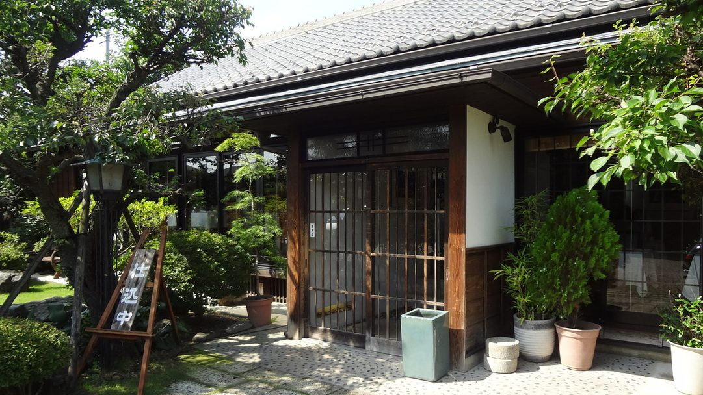
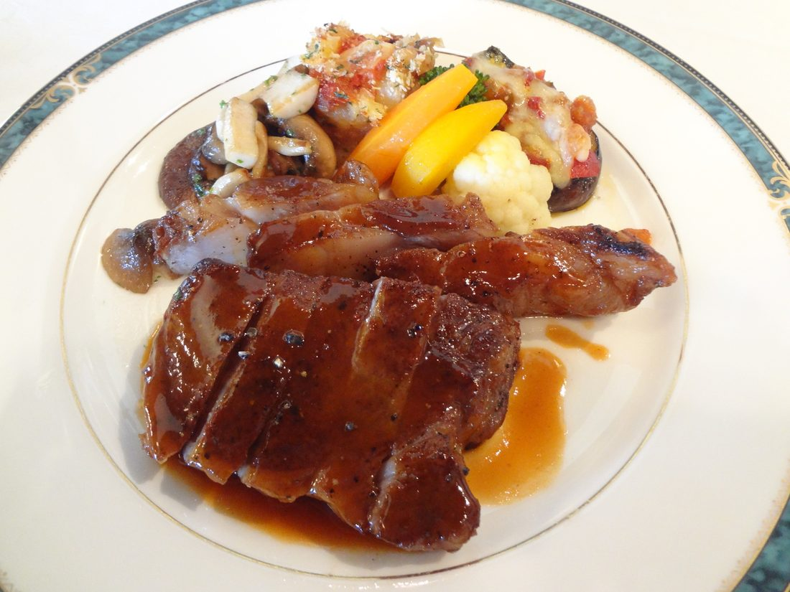
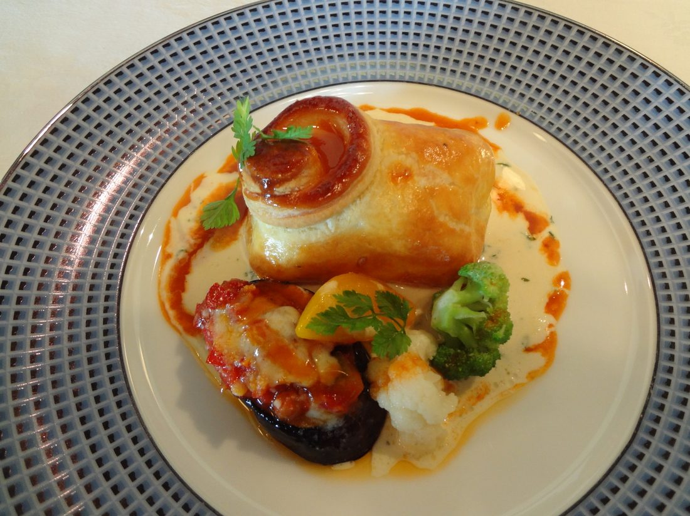
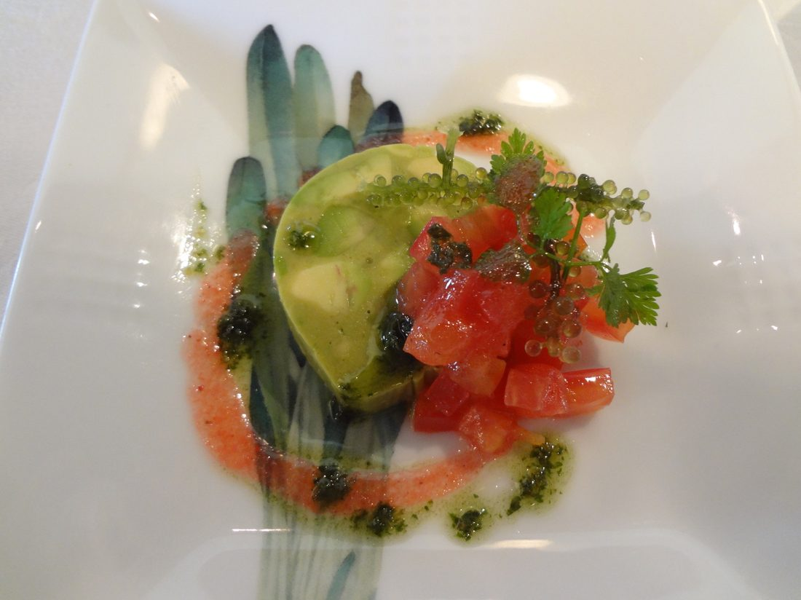
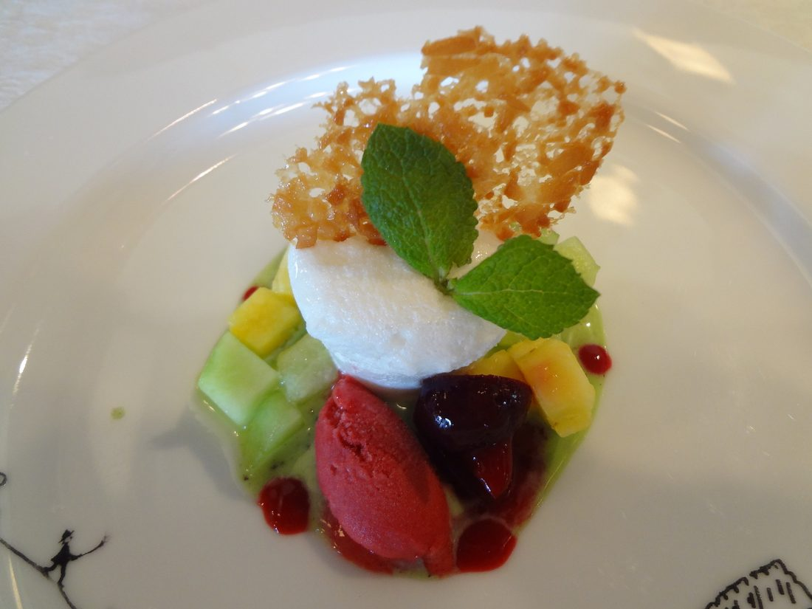
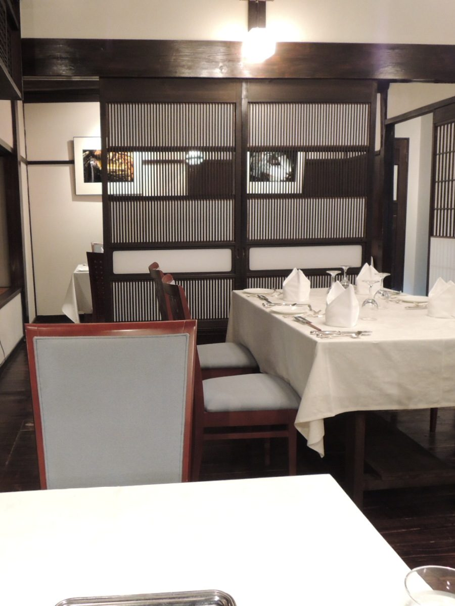
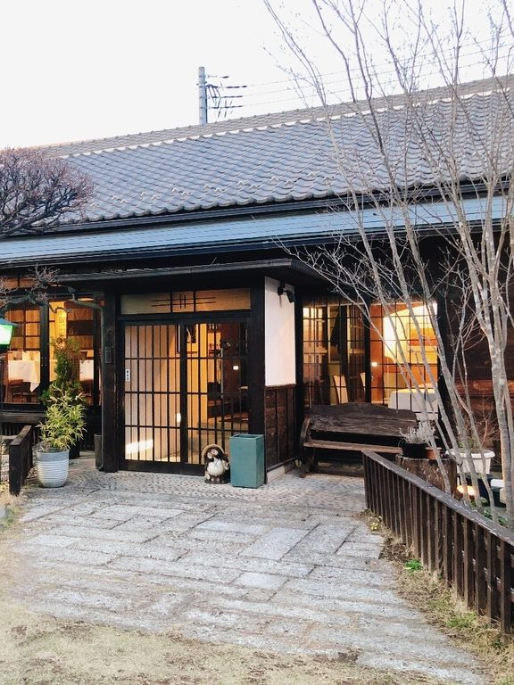

おもてなしは一流に、お料理は本格に。それでいて、気軽に味わっていただきたい。
当店がお箸をお出ししているのは、この一点のためです。
ナイフとフォークの作法をいったん脇に置いて、ひと皿ずつ、お箸でどうぞ。
シェフの村川は、横浜迎賓館、横浜ロイヤルパークホテルなどで料理長を務め、生まれ育った栃木に戻ってまいりました。
仏・オーギュスト・エスコフィエの会員でもございます。
その手から出る一皿を、いちばん肩の力の抜けた道具で受け取っていただく。それが当店のフレンチです。
お肉は、地元の小山和牛をステーキにしてお出しします。
コースの上のほうでは、牛ヒレとフォアグラをパイに包んで焼き、マデラ酒風味のソースを添えます。
お魚は市場からのものを、その日の仕立てで。パイ包み焼きやポワレにしてお出しします。
パンは店で焼いております。おかわりをお申し付けください。
デザートには、レモン牛乳を使ったグラースをお出しすることもございます。地元の素材は、こうして甘いものにも忍ばせています。




この家は、農家として代を重ねてきた、シェフの旧自宅です。
築百二十年になります。二〇〇六年の秋、ここを改めてレストランにいたしました。
壁は白い漆喰、柱と梁は黒。天井は梁をあらわしたままです。
靴のまま、そのままお上がりください。
南に面した窓は一面のガラスで、庭を眺めながらお食事いただけます。
衝立で仕切った半個室もございます。
ご法事、お誕生日、ご結婚のお祝いの席にもお使いいただいております。


お客様からいただいた言葉を、そのまま掲げます。
「スキル高いシェフがあえてアットホームなフレンチを提供してるのがよく分かる味。特にメインのベーコンで包んだ粗挽き肉を下はデミグラス、上はホワイトソースかけた肉料理は絶品。」
— お客様の声より
「古民家の心和む空間で、心を込めた本格的フランス料理を、マネージャーさんの紳士的なおもてなしでゆっくり堪能できました」
— お客様の声より
「全体的にボリュームたっぷりながら、美味しく雰囲気ともに満足でした。」
— お客様の声より
「10回以上通っています。お魚コースが好きです。」
— お客様の声より
ごゆっくりお過ごしいただくために、いくつかお願いがございます。
| 住所 | 〒323-0034 栃木県小山市神鳥谷5-2-22 |
|---|---|
| 営業時間 | 11:00〜15:00（L.O. 14:00）／17:00〜21:00（L.O. 20:00） |
| 定休日 | 水曜日（祝日も休み） |
| 電話 | 0285-22-3621 |